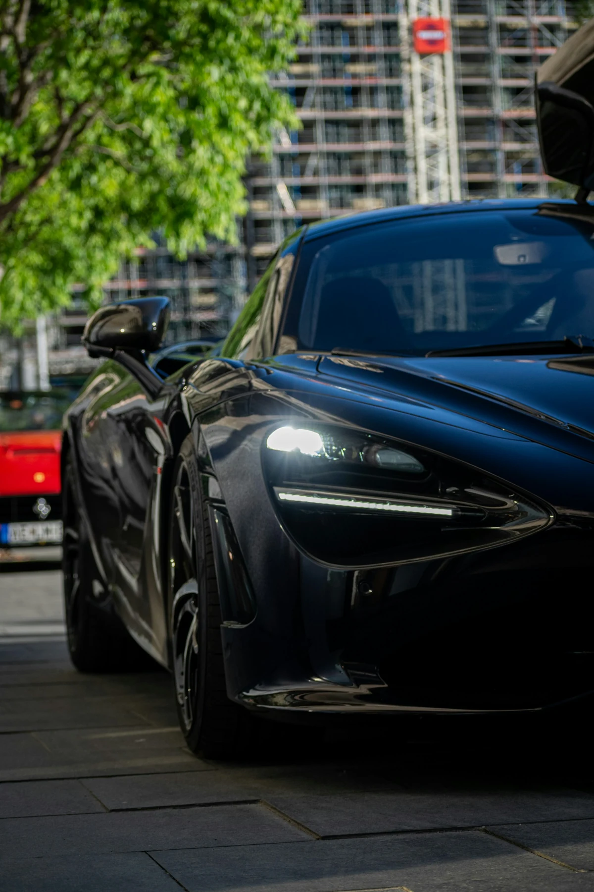

Conte sobre o veículo.
Carro ou moto, marca, modelo e o que gostaria de melhorar.
ESTÉTICA AUTOMOTIVA
Preparando a sua experiência
Cuidado para carros e motos, do primeiro olhar ao último acabamento. Com atenção aos detalhes e conversa direta com Mateus.

Pintura, vidros, rodas, bancos e acabamentos. Cada material pede um cuidado próprio. Na Fine Form, a gente começa entendendo o veículo e o que você quer melhorar.
Encontre seu ponto de partida ↗Planos mensais para um veículo cadastrado.
As visitas são combinadas diretamente comigo.
Sem divisão por porte. Sujidade excepcional e tratamentos adicionais são avaliados previamente. Etapas incluídas não são cobradas novamente.
Explore as fotos. Escolha a parte que merece atenção.
Seu interesse segue para nossa conversa.

Seu veículo, o cuidado e seu horário de preferência: juntos no resumo.
Carro ou moto, marca, modelo e o que gostaria de melhorar.
Escolha os cuidados e uma preferência de data e horário.
O pedido chega ao meu painel. Você acompanha a resposta e o andamento pelo seu link privado, e a gente combina os detalhes.
O orçamento enviado fica sujeito à análise de Mateus. A preferência de horário não confirma uma reserva.
Avaliações de atendimentos entregues. Experiências reais, na voz dos nossos clientes.
Quem já recebeu o veículo pode deixar uma avaliação pelo link do pedido.
Eu avalio o veículo, explico os cuidados possíveis e combino o que será feito antes de começar. Um veículo por vez, com atenção aos materiais e ao que você espera do atendimento.
Você indica sua preferência. Eu recebo seu pedido no painel, converso com você e confirmo o atendimento conforme a agenda. O site não bloqueia vagas.
Depende do veículo, dos materiais e do cuidado escolhido. O prazo é combinado na avaliação. Higienizações precisam de secagem; vitrificação também exige cura conforme o produto.
A Essencial custa R$ 100: lavagem externa e secagem, rodas e pneus nas partes acessíveis, aspiração, tapetes, painel, console e vidros. A Premium custa R$ 180 e inclui tudo isso, mais limpeza de emblemas, frestas e vãos de portas, proteção dos plásticos internos e cera na pintura. As duas recebem o mesmo capricho; a Premium acrescenta etapas de detalhamento e proteção.
A Premium custa R$ 180 e inclui manutenção, detalhamento de frestas e emblemas, proteção dos plásticos internos e cera. O Extra custa R$ 1.590 e reúne também higienização profunda do interior, incluindo teto e cintos, plásticos externos, rodas e caixas de roda, tratamento dos vidros com repelência e polimento Premium quando necessário. Os bancos precisam de tempo para secar após a higienização.
Os plásticos externos sem pintura e compatíveis recebem limpeza, preparação e revestimento cerâmico próprio: R$ 220 para carros e R$ 150 para motos. No Extra, o acréscimo é de R$ 150, pois substitui o acabamento de manutenção já incluído. É um cuidado separado da vitrificação da pintura, com cura e entrega combinadas antes.
São finalizações diferentes. A vitrificação recebe preparação, remoção de resíduos e aplicação manual de revestimento cerâmico. Custa R$ 1.390 com preparação e realce, ou R$ 970 como complemento de um polimento ou do Extra. O prazo de cura e a manutenção dependem do produto e são combinados antes.
A Moto Premium cuida das superfícies estéticas acessíveis e inclui cera na pintura compatível. Não inclui motor, inferior/chassi, corrente/transmissão, desmontagem ou manutenção mecânica. Não aplicamos pretinho nos pneus nem acabamento escorregadio nas áreas de contato ou nos freios.
Cada plano vale para um veículo cadastrado e inclui uma quantidade de visitas no mês. Você escolhe o interesse pelo site e conversa comigo antes de contratar. Polimentos e higienizações profundas têm orçamento próprio.
Conte o que seu veículo precisa. Eu ajudo você a escolher.
Preparar meu atendimento